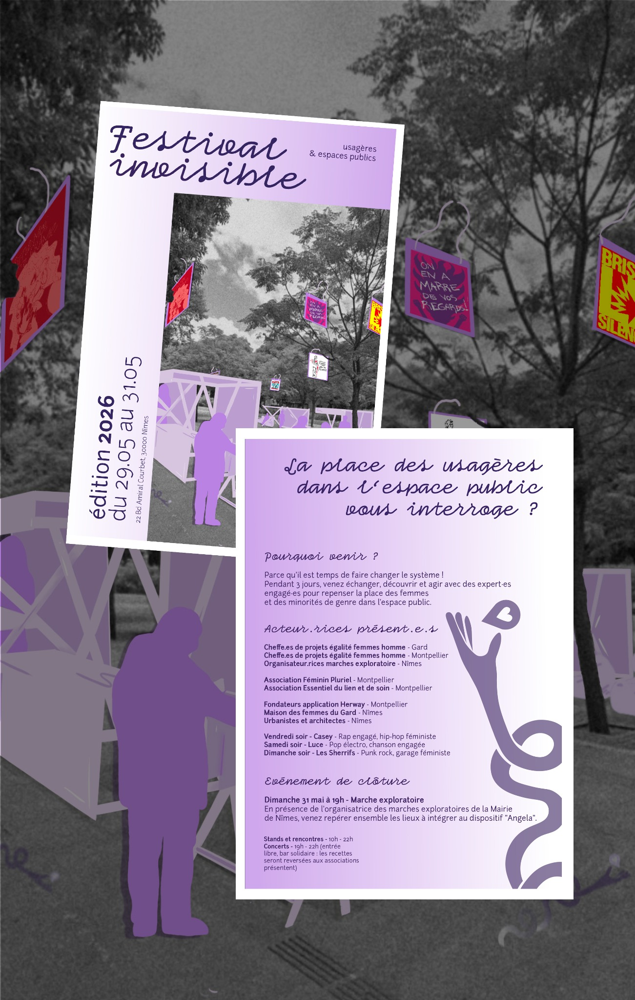
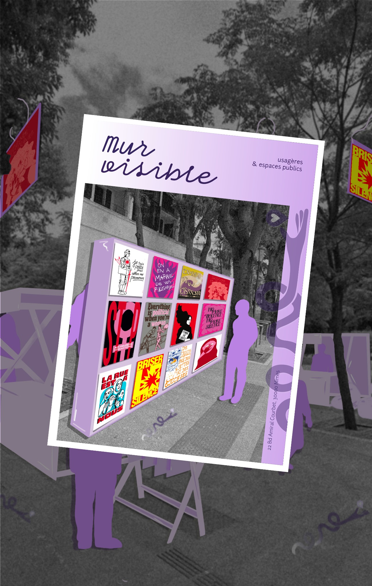
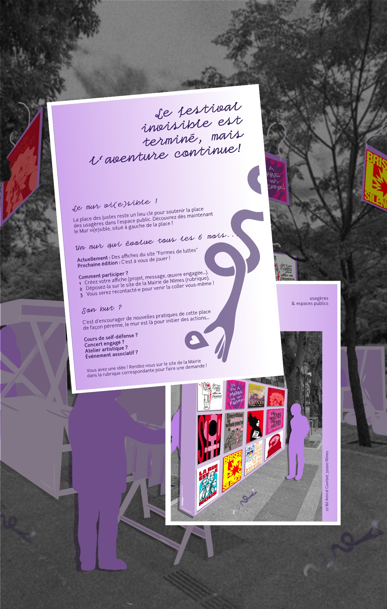
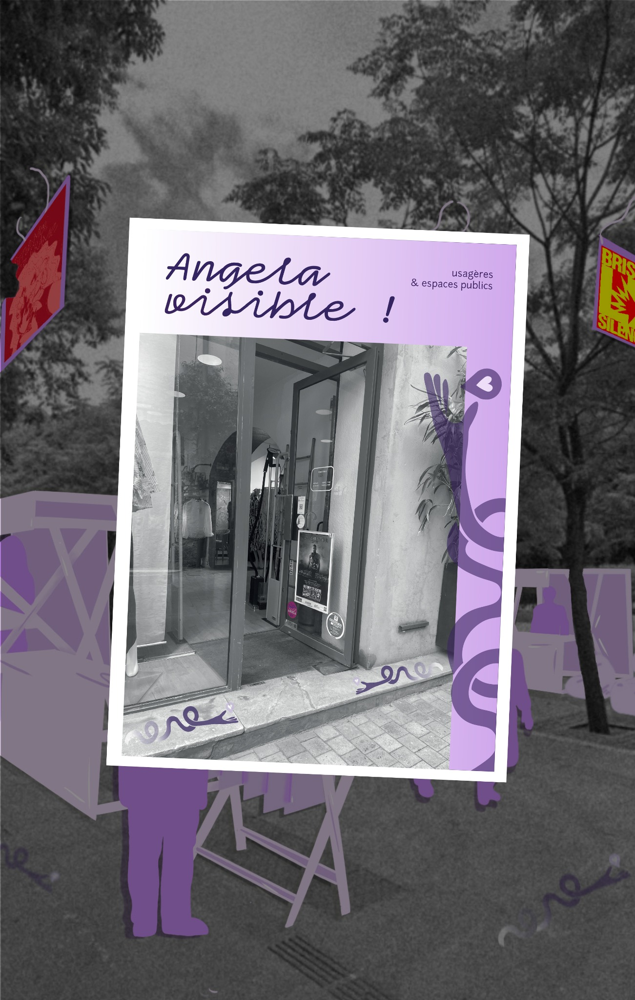
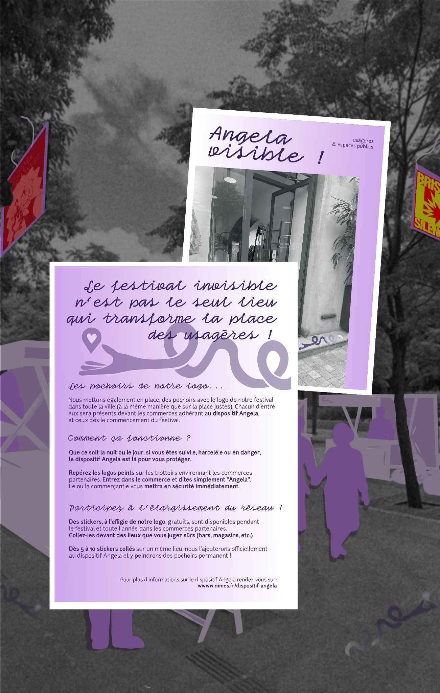
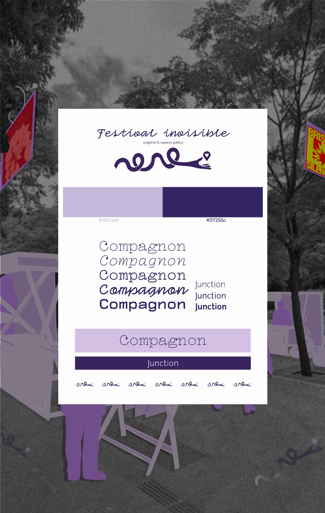

Design social
Festival
Invisible
Comment rendre la rue plus sûre pour les femmes ? J’ai passé trois mois sur cette question en Master Design Social à Nîmes.
Spoiler : la réponse n’est pas « plus de lampadaires ».

Contexte
Réhabiliter
l’espace public.
Pour mon projet de design social, je me suis demandé : et si on réhabilitait l’espace public au lieu de demander aux femmes de s’adapter ?
Je suis allée parler à celles et ceux qui vivent le problème au quotidien : des femmes, des associations comme Féminin Pluriel à Montpellier, des urbanistes, des élues et l’équipe de l’application Angela.
Constat : l’insécurité concerne tout le monde. Les solutions aussi.


Ce que j’ai conçu
Des outils
pour agir.
J’ai imaginé un festival et des outils graphiques concrets pour :
Réhabiliter les lieux
Rendre visibles les zones délaissées avec une signalétique et des affiches qui donnent envie de se les réapproprier.
Alerter sans culpabiliser
Donner la parole à celles qui la prennent trop peu, avec des supports qui réveillent les consciences. Parce que non, le harcèlement de rue n’est pas une fatalité.
C’est tout l’enjeu du design social : on ne fait pas juste une belle affiche, on crée un outil qui sert à agir.


Conclusion
Un visuel
qui sert.
Ce projet m’a appris une chose que je réutilise pour toutes mes clientes : un bon visuel ne décore pas, il rend un lieu ou un message plus sûr, plus lisible, plus légitime.

